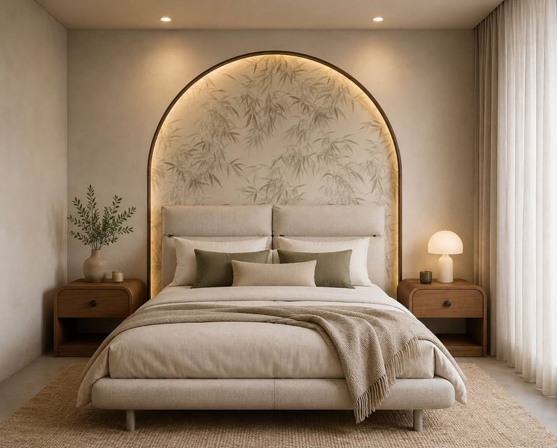
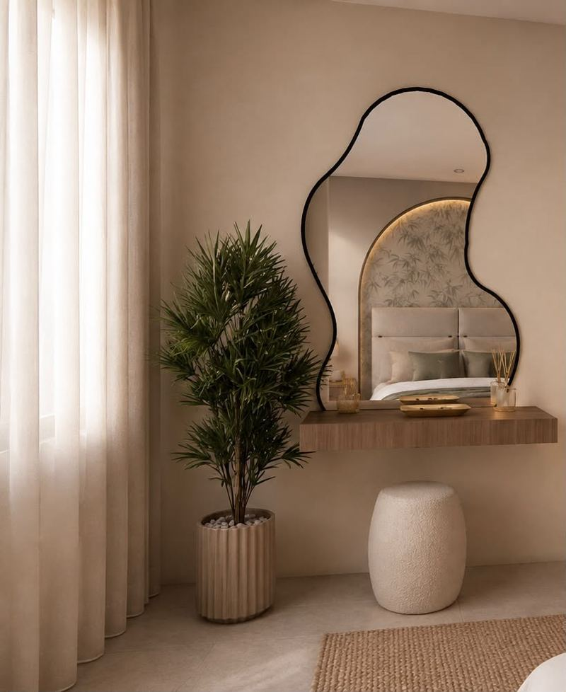
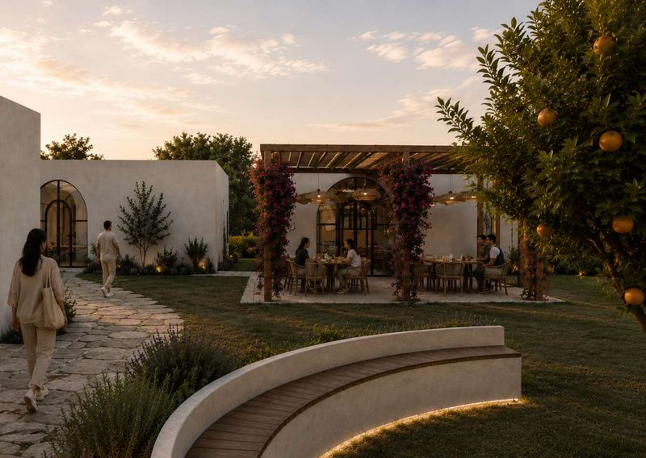
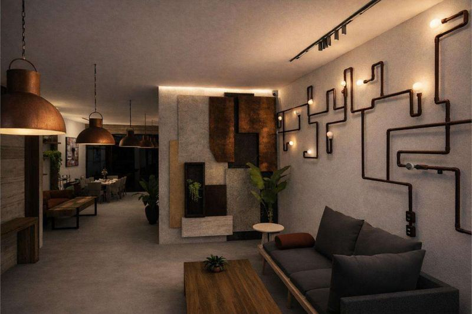

Interior designer · Marrakech
SoukainaAit Ali
Spaces that read first as a plan, then as material and light.


Academic project · Rabat
Rehabilitation Centre
A rehabilitation centre in Rabat for behavioural addictions linked to instant gratification, organised around a central garden.
View project
Concept store
REBORN
A concept store that gives furniture a second life, with a workshop where customers learn to repair and customise.
View project
Parapharmacy and spa concept
Parapharmacy Allure
A parapharmacy and a wellness spa under one roof, over three levels.
View project
How I work
Survey
Measurements and observations on site, starting from what exists.
Choose materials
Textures, colours and materials gathered into boards before any drawing is final.
Model
Plans, sections and elevations in AutoCAD; 3D models and renders in SketchUp, Enscape, V-Ray and 3ds Max.
Present
Clear presentations for clients, and follow-up of materials and trades.
Interior design graduate, freelance since 2024.
About meGet in touch